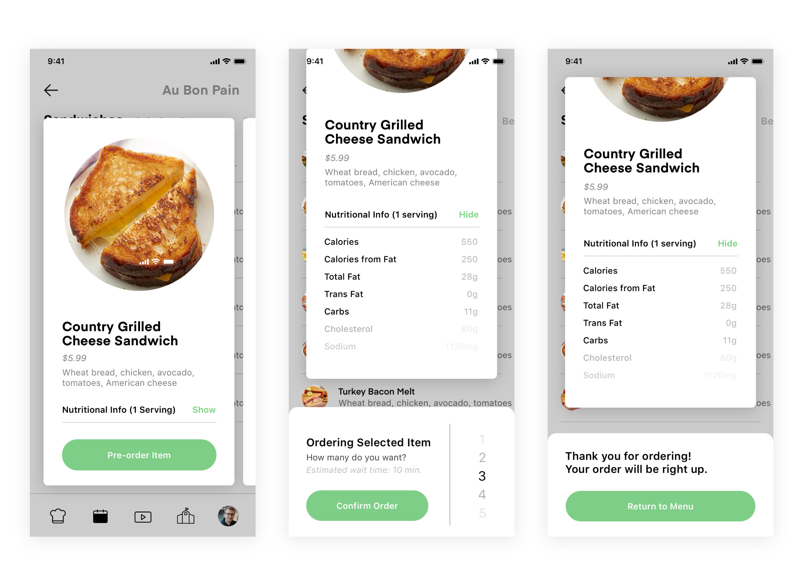
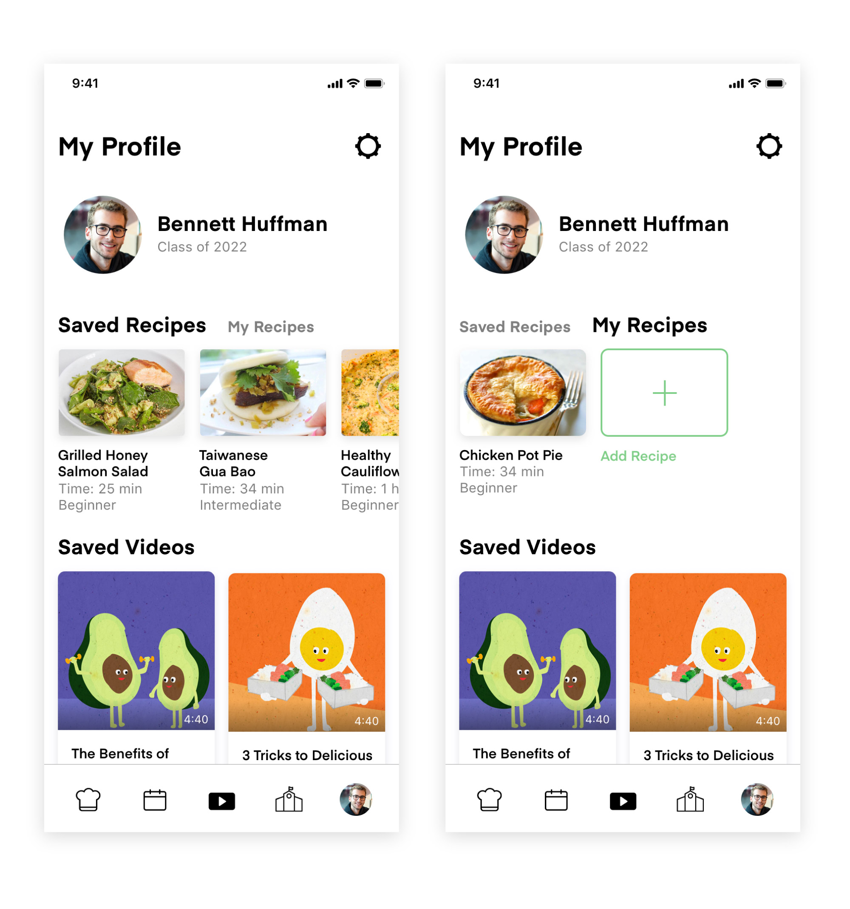
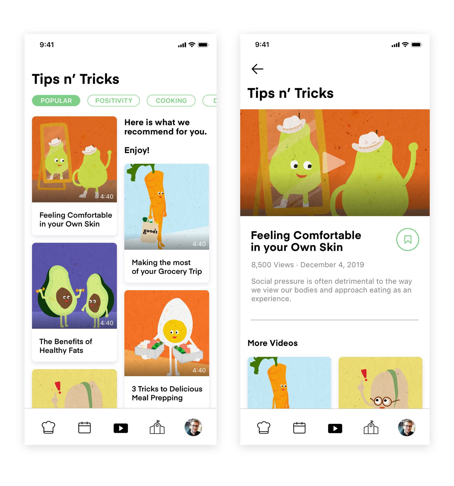

Final Designs
Overview
From our user testing results, we developed our final app designs. In our final solution, we made sure to cater towards the wide spectrum of CMU students and their dietary needs.
Live Dining — Calendar
The primary function for this app is the live dining calendar for on-campus restaurants. This already exists on CMU’s website as well as on a student-built site called CMU Eats, but the issue right now is a lot of valuable information on CMU dining is inaccessible because of how it is scattered across various digital services.
This feature is important to the app because it’s the practical feature that will keep students consistently using the app, and ultimately lead them explore our more behavior-changing features. From this page, users are able to explore individual dining locations and view individual restaurant items.
*After user testing, we included traffic tags that indicate population and traffic at each physical dining location.

Live Dining — Nutrition Facts
Viewing nutrition facts can contribute to obsessive nutrient tracking behaviors, so we implemented a precautionary barrier that requires users to watch an educational awareness video before accessing the nutrition facts.

Living Dining - Preorder System
One of the biggest priorities we found among students was convenience and time. Introducing a pre-order system addresses this concern and creates a more efficient, stress-free dining experience for students.
*After user testing, we displayed estimated wait times for potential pre-orders.

Recipe Page
For people who sometimes or fully eat off-campus, we designed a recipe viewing and sharing aspect. We were really careful, however, about not creating a social media platform where the number of likes influenced an user’s emotional state. After user testing though, we did find that some sort of feedback about the reliability of recipes was extremely important. Rather than hearts or thumbs ups, we decided to implement a "used tag count", which is my attempt at a neutral indicator that visualizes which recipes have been tested repeatedly.
Another tricky obstacle we discovered after user testing was how to make the Recipe platform feel more peer-to-peer yet still maintain the privacy of the students who post. Again, we really wanted to avoid the toxicity that comes from social media "clout."
*After user testing, our solution was to simply display the first name of the recipe publisher and their current year of study. Omitting the last name maintained a degree of anonymity and showing their school year helps reinforce that that these recipes are not externally sourced from the web.Furthermore, each individual recipe page, users can view relevant information such as time required to make, serving size, and difficulty level.

User Profile Page
Obviously, nutrition is highly dependent on the individual and their eating tendencies. Because of that, Carnegie Kitchen allows users to save and share recipes, and access saved videos from the Tips n' Tricks page.

Tips N' Tricks
Because our research revealed that people don't have a positive outlook on proper nutrition, we designed a video resources feature for Carnegie Kitchen. This page provides practical videos as well as emotion-based videos that explore how food can shape and better one's emotional health. This feature is also meant to challenge existing paradigms about the appearance ideal and help people think about how food enrich their emotional lives.

Emotional Check-ins
Food has an emotional effect on all of us, especially for vulnerable eaters. Because this emotional influence of eating is often overlooked, we integrated occasional emotional banner check-ins. If Carnegie Kitchen notices that a user has reported feeling down lately, we help them process and respond to their emotions in a non-destructive ways. More specifically, the feature promotes talking to CMU services, watching emotional resources, and viewing an external link to some food memes. :)

CMU Health Services
From our interviews with both students and staff, we recognized a lack of relationship between CMU services. The app has an entire page dedicated to CMU Health Services in hopes of strengthening the relationship between the two parties through access and knowledge.